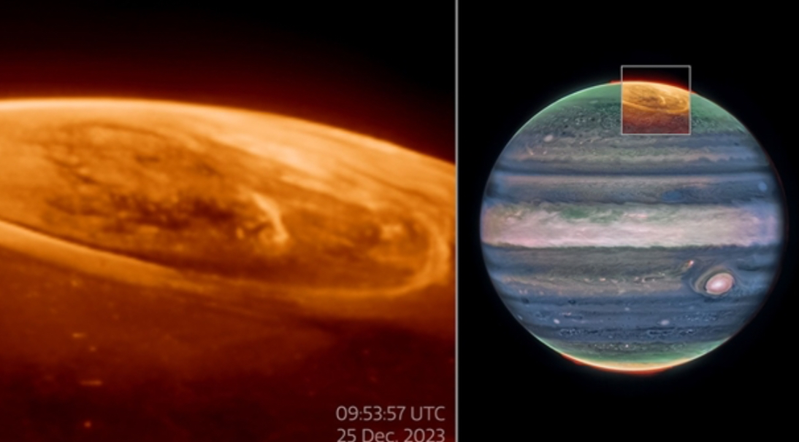
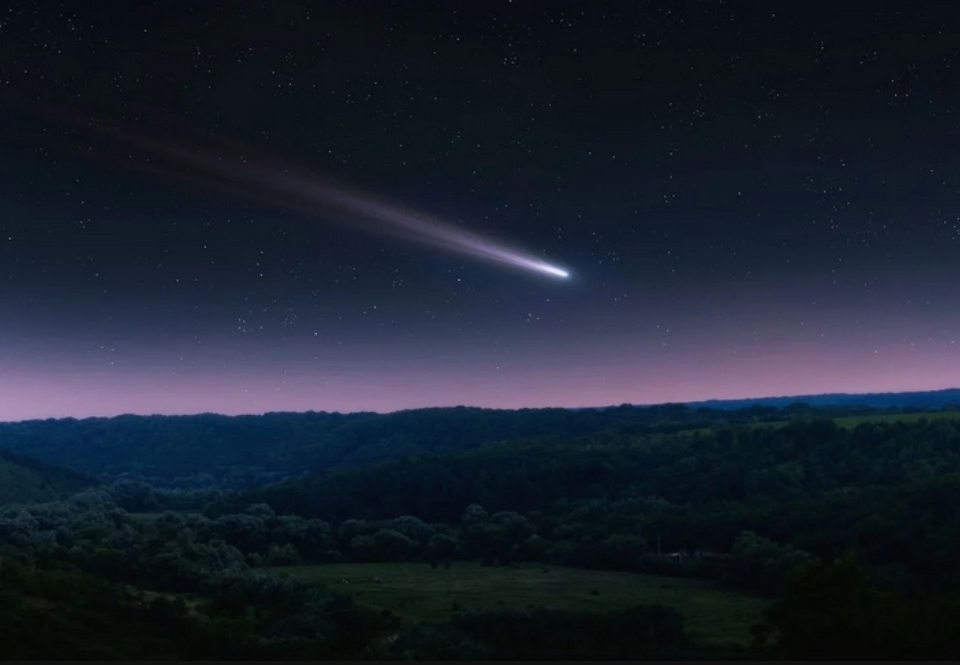

Los reportes recientes de la NASA incluyen pruebas de la tecnología Zylon para aterrizajes en Marte a bordo del X-37B, el descubrimiento de un mundo triple en el sistema solar, la detección de un asteroide "cacahuete" 3I/ATLAS acercándose a la Tierra y la obtención de datos sobre el núcleo sólido de Marte gracias al Marsquakes, además de análisis del polvo de Marte y un nuevo mapa de montes submarinos .
El telescopio espacial James Webb de la NASA ha captado nuevos detalles de las auroras del planeta más grande de nuestro sistema solar. Las luces danzantes que se observan en Júpiter son cientos de veces más brillantes que las que se ven en la Tierra.
El cometa descubierto en 2023, conocido como el "cometa del siglo", será visible desde la Tierra a finales de este año. Este evento astronómico es muy esperado por los aficionados a la observación del cielo, ya que cuando un cometa se acerca a la Tierra, su cola se extiende por kilómetros, ofreciendo imágenes impresionantes que atraen a muchas personas.
La NASA (Administración Nacional de Aeronáutica y del Espacio) es la agencia del gobierno de los Estados Unidos responsable de la exploración espacial, la tecnología aeroespacial, las ciencias de la Tierra y la investigación aeronáutica.
NASA